拿到灰飞烟灭的算法岗offer，经历了什么？
张斌 2018级信号与信息处理 信息学院
Tel&WeChat: 13912981928
E-mail: z-bingo@outlook.com
大纲
- 我的2021年秋招
- 算法岗求职分析
- 算法岗求职经验总结
个人情况
- 学校：本211(河海大学) + 硕985
- 专业：通信工程 + 信号与信息处理
- 研究方向：计算机视觉，尤其是人脸检测、物体检测、神经网络架构搜索
- 相关成果：
- 论文：SCI一篇，CCF-B Oral一篇，CCF-A Workshop一篇，CCF-A在投一篇
- 专利：发明专利两项授权、两项受理
- 竞赛：省竞赛第一名、顶会Challenge冠军一项、数据集榜单第一名两项
- 实习经历：
- 2019.03~2019.09, 南京虹软, 计算机视觉算法实习生, 图像超分、去噪
- 2019.11~2020.10, 腾讯优图, 计算机视觉算法见习研究员，人脸检测、神经网络结构搜索
- offer情况：
| 公司及部门 | 方向 | 工作地 | 薪资情况 |
|---|---|---|---|
| 腾讯优图实验室 | 检测/跟踪 | 上海 | 大SP |
| 阿里云, 城市大脑 | 检测/跟踪 | 杭州 | - |
| 字节跳动AI Lab | 检测/跟踪 | 上海 | SP |
| 华为无线 | 检测/跟踪/自动驾驶 | 上海 | FX 15级 |
| vivo | 去噪/超分/增强 | 杭州 | SP |
| 虹软 | 去噪/超分/人脸识别 | 南京 | SSP |
| 纵目科技 | 感知/自动驾驶 | 上海 | - |
| 图森 | 感知/自动驾驶 | 北京+上海 | - |
| Momenta | 感知/自动驾驶 | 北京+苏州 | SSP |
- offer情况：
| 公司及部门 | 方向 | 工作地 | 薪资情况 |
|---|---|---|---|
| 美团北斗计划 | 挂了 | ||
| 快手MMU | 挂了 | ||
| 大疆 | 挂了 | ||
| 商汤研究院 | 挂了 | ||
| 小米未来星 | 挂了 | ||
| 爱奇艺 | 挂了 | ||
| 虎牙直播 | 挂了 |
全都莫名其妙挂了！
算法岗包含什么？
- 计算机视觉 (CV) Deep Learning
- 自然语言处理 (NLP) Deep Learning
- 数据挖掘/推荐/搜索算法 (RS) Deep Learning Machine Learning
- 机器学习算法 (ML) Machine Learning
- 语音/图像/视频算法 标准相关，如MPEG4, H.264，以及传统算法
- 射频/通信算法 协议相关，如IEEE 802.11
- ......
CV
NLP
RS
三大AI算法
AI算法
ML
DL
RS
CV
NLP
三大AI算法就业领域
- 计算机视觉(CV)：泛娱乐、安防、工业质检、自动驾驶
- 自然语言处理(NLP)：机器翻译、用户画像、知识图谱、聊天机器人
- 推荐系统(RS)：智能推荐、搜索、广告推送
AI算法就业岗位
| 岗位 | 算法研究员 | 算法“研究员”+工程师 |
|---|---|---|
| 科研业务占比 |
科研 业务 |
科研 业务 |
| 学历 | 博士为主，少量硕士 | 硕士为主 |
| 工作内容 | 论文、刷榜为主 | 业务落地为主，论文、刷榜为附加内容 |
| 应聘难度 | 高，看重论文数量 | 需有顶会或比赛较好成绩作为筛选条件，同时具备较好的工程能力 |
三大AI算法就业公司
BAT、TMD基本包含所有职位
| 方向 | 就业单位 |
|---|---|
| 自然语言处理-NLP | 科大讯飞、作业帮、微软小冰、小爱同学等 |
| 推荐系统-RS | 几乎所有互联网公司均会涉及，常见职位为机器学习算法工程师 |
| 计算机视觉-CV |
|
看似很多相关公司，算法秋招真的容易吗？
理想很丰满，现实很骨感
一些源自牛客网的真实写照
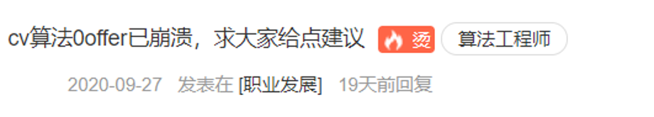
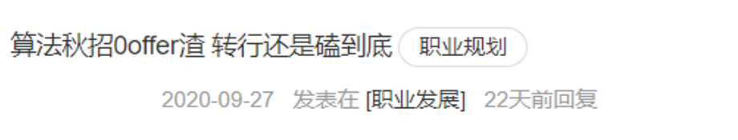
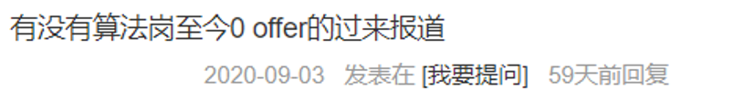
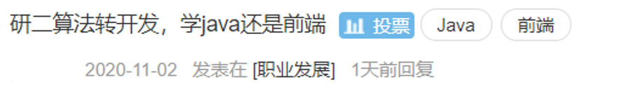
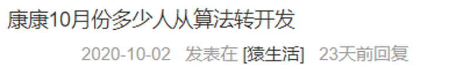

近年来算法岗求职趋势
• 2019年，神仙打架！
• 2020年，诸神黄昏！
• 2021年，灰飞烟灭！
• 2022年，不可思议！
为什么会这么难？
- 相较于开发、测试等岗位，算法岗Head Count (HC)比较少
- 算法岗要求高，导致80%的offer掌握在20%的人手中
- 算法落地更注重工程能力，掌握技能与企业所需不相符
即便如此，还是越来越多人卷入这场"厮杀"...
这是为什么呢？
- 盲目从众。e.g. 硕士不做算法会不会很low，研究生必须找算法岗才有前途？
- 入门简单、轮子众多。Python很简单可以搭出模型，开源代码非常多，简单调参后就可有不错的性能。
- 舆论导向、高薪诱惑。很多AI自媒体时常推送人工智能培训班课程，如学会xxx，包你年薪50w；一周学会xxx。
事实并非如此
- 对于绝大多数公司和职位，都是以产品为导向的。(以利益为导向)
- 对于产品而言，测试、开发等更具有实际价值，算法是锦上添花的东西。
- 搭积木式的算法工程师不再是各企业的刚需，更需要具体算法落地能力的研究员、工程师。
- 算法高薪是前几年市场缺口大的表现，今年来薪资已与开发岗保持一致。甚至开发更容易拿高薪。
- 算法岗的很多方向已经被认为是基础知识，即便学会了也很难通过这项技能拿到offer。如：CV中的图像分类。
算法岗校招应该具备怎样的条件呢？
通过几个JD (Job Description)进行分析
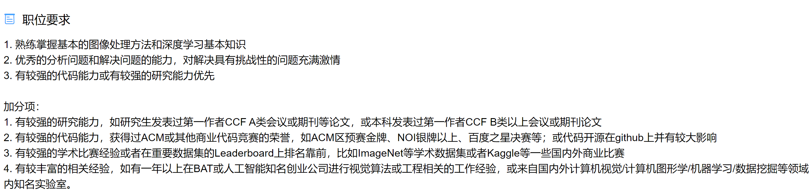
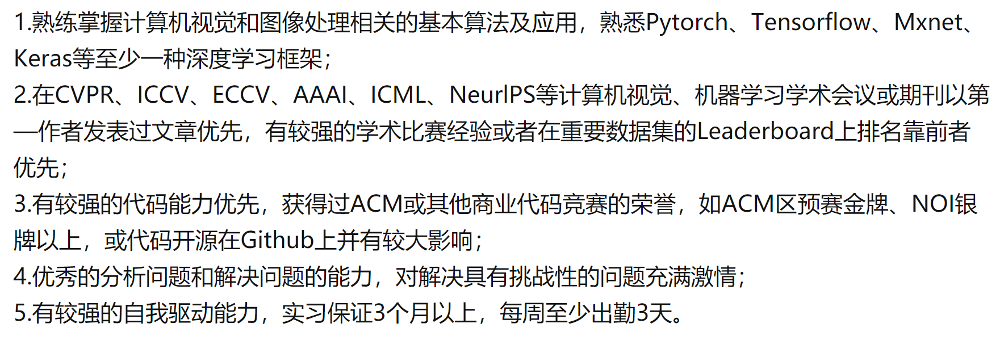
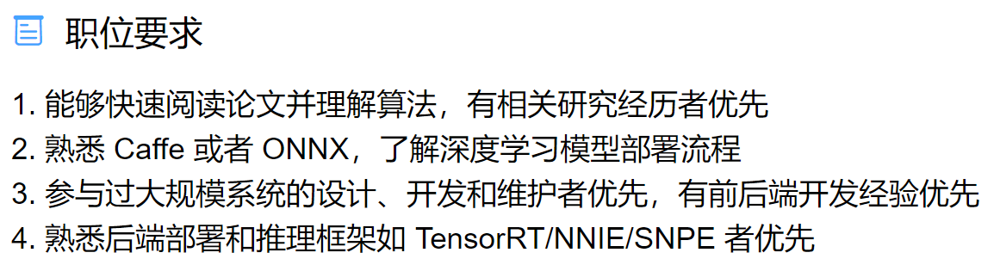
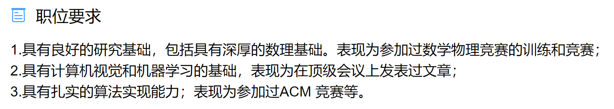
几个共同及特有的点
- 对领域了解。熟悉Pytorch、TensorFlow、MXNet等。
- 研究能力。第一作者CCF-A类会议或期刊论文，数学竞赛、物理竞赛。
- 代码能力。ACM竞赛、NOI竞赛，或开源代码在github有较大影响。
- 工程能力。Caffe、ONNX、TensorRT、C++。
- 经验。重要比赛或Leaderboard获奖、大厂或知名AI初创公司实习。
不同的能力组合对应着不同的职位。若都具备，你一定是强者！
三大AI算法之间的对比
- 谁的HC更多？ RS > CV > NLP
- 谁更能盈利？ RS > CV > NLP
- 哪个求职者更多？ RS $\approx$ CV > NLP
- 谁更卷呢？ CV > NLP > RS
总而言之，找工作就是要迎合市场需求！
关于图像处理和计算机视觉，我的经历
学习路线
- 本科期间，传统图像处理，如缺陷检测、车牌检测；自学深度学习。
- 2018.06~2018.09，南京高视科技实习，从事缺陷检测工作。
- 2018.09~2019.02，系统学习计算机视觉，并形成第一篇期刊文章。
- 2019.03~2019.09，南京虹软实习，从事图像去噪、超分工作；期刊文章从投稿到录用；系统性地刷题 (题量约200)。
- 2019.09~2019.10，持续刷题，温习基础知识，投递新的实习。
- 2019.11~2020.10，腾讯优图实习，论文 + 比赛。
- 2020.06~2020.09，准备简历；偶尔刷题保持手感，准备秋招。
- 2020.10~2020.11，结束面试，谈薪资 + 签约。
所见所闻所感所想
- 项目足够，每场面试前15至20分钟的套路都是类似的，可充分准备。
- 面经随处可见的SVM从未遇到过，算法岗面试一般都围绕简历展开。
- 手撕代码可以不是最优解，要格外注意代码风格。
- 看过更多的论文面试时会更轻松。(防止遇到研究方向不一致的面试官)
- 最好学会写Cpp和cuda，会cuda已经超过了一大半的算法求职者。
- 学好机器学习，
关于学习路线的建议
(仅以自身经历给出建议，未必适用于所有同学，且倾向于CV方向)
基础知识学习
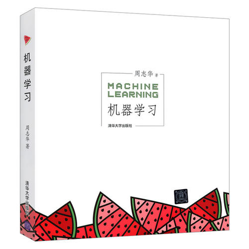
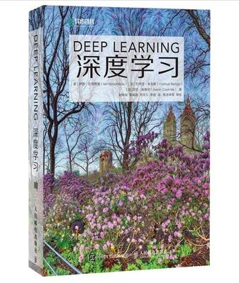
不一定非得掌握，但建议看过一遍
代码能力
- 剑指offer必刷，全为经典题、高频题。
- Leetcode建议刷题量300+，前200道尽量刷，其余可随机。
- 使用多语言刷题，推荐C++和Python。
- 算法题是持久战，题量上去后仍需每隔几天刷几题保持手感。
- 遇到难题不必死扣，可先跳过。
- 思路无法通用的题目可以不做，如Leetcode摔鸡蛋问题。
掌握领域内经典和热点问题
- 通过论坛、博客，了解一个子方向的发展脉络，阅读经典文章。
- 各种AI自媒体 (公众号、知乎专栏)，推送的相关文章必看。
- Github的各种awesome仓库，主要获取最新的顶会文章及开源代码，如Awesome-Deblurring。
- 直接通过arXiv查找最新上传的文章，选择性略读或精读。
积累经验
- 对于state-of-the-art方法进行分类，剖析其通过什么方式来解决什么问题，并尝试探讨其利弊。
- 基于开源代码，积极复现新文章、新方法。
- 通过天池、Kaggle等平台参加相关竞赛。
- 寻找相关实习，将研究与项目相结合，积累项目经验。
- 阅读相近的不同方向的文章，学习不同领域处理问题的方式方法，拓宽眼界。
最后，简洁大方的简历也很重要
我的简历
我的主页
欢迎交流，欢迎提问！
拿到灰飞烟灭的算法岗offer，经历了什么？
导出PDF
张斌 2018级信号与信息处理 信息学院
Tel&WeChat: 13912981928
E-mail: z-bingo@outlook.com